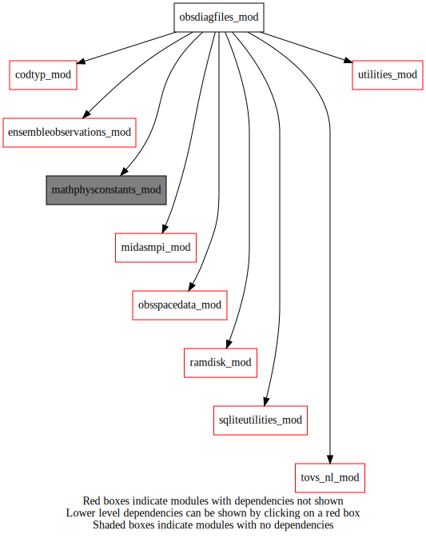
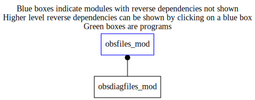

Dependency Diagrams:
 Direct Dependency Diagram¶
 Reverse Dependency Diagram¶
Description
MODULE sqliteRead (prefix=’diaf’ category=’3. Observation input/output’)
- Purpose
To write the “diag” format SQLITE observation files. Data is stored in obsSpaceData object.
Quick access
- Routines
diaf_getobsfamilylistmpiglobal(),diaf_getobsfilename(),diaf_writeallsqldiagfiles(),diaf_writesqldiagfile()Needed modules
obsspacedata_mod: MODULE obsSpaceData_mod (prefix=’obs’ category=’6. High-level data objects’)
midasmpi_mod: MODULE midasMpi_mod (prefix=’mmpi’ category=’8. Low-level utilities and constants’)
fsqlite
mathphysconstants_mod: MODULE MathPhysConstants_mod (prefix=’mpc’ category=’8. Low-level utilities and constants’)
utilities_mod: MODULE utilities_mod (prefix=’utl’ category=’8. Low-level utilities and constants’)
ramdisk_mod: MODULE ramDisk_mod (prefix=’ram’ category=’8. Low-level utilities and constants’)
tovs_nl_mod: MODULE tovs_nl (prefix=’tvs’ category=’5. Observation operators’)
rttov_const(ninst())
codtyp_mod: MODULE codtyp_mod (prefix=’codtyp’ category=’8. Low-level utilities and constants’)
sqliteutilities_mod: MODULE sqliteUtilities (prefix=’sqlu’ category=’3. Observation input/output’)
ensembleobservations_mod: MODULE ensembleObservations (prefix=’eob’ category=’6. High-level data objects’)Variables
Subroutines and functions
- subroutine obsdiagfiles_mod/diaf_writeallsqldiagfiles(obsdat, sffilename, onlyassimobs, addfsodiag[, ensobs_opt])¶
- Purpose
To prepare the writing of obsSpaceData content into SQLite format files
- Arguments
obsdat [struct_obs ] :: obsSpaceData object
sffilename [character ] :: fileName acronym used for surface obs file
onlyassimobs [logical ] :: only write assimilated obs
addfsodiag [logical ] :: include FSO column in body table
- Options
ensobs_opt [struct_eob ] :: ensObs object
- Called from
- Call to
diaf_getobsfamilylistmpiglobal(),tvs_getallidburptovs(),diaf_getobsfilename(),diaf_writesqldiagfile()
- subroutine obsdiagfiles_mod/diaf_writesqldiagfile(obsdat, obsfamily, onlyassimobs, addfsodiag, instrumentfilename[, codetypelist_opt[, ensobs_opt]])¶
- Purpose
To write the obsSpaceData content into SQLite format files
- Arguments
obsdat [struct_obs ,inout]
obsfamily [character ,in]
onlyassimobs [logical ,in]
addfsodiag [logical ,in]
instrumentfilename [character ,in]
- Options
codetypelist_opt (*) [integer ,in,]
ensobs_opt [struct_eob ]
- Called from
- Call to
sqlu_getinitialidobsdata(),obs_getheaderindex(),obs_headelem_i(),ram_getramdiskdir(),obs_mpilocal(),sqlu_handleerror(),obs_elem_c(),obs_headelem_r(),obs_bodyelem_r(),obs_bodyelem_i(),obs_columnactive_rb(),codtyp_get_codtyp(),utl_abort()
- function obsdiagfiles_mod/diaf_getobsfilename(obsfamily[, sffilename_opt[, codetype_opt]])¶
- Purpose
Return the part of the observation file name associated with the type of observation it contains.
- Arguments
obsfamily [character ]
- Options
sffilename_opt [character ] :: fileName acronym used for surface obs file
codetype_opt [integer ]
- Return
filename [character ]
- Called from
- Call to
utl_abort(),codtyp_get_name(),tvs_isinstrumallskyhuassim(),tvs_getinstrumentid(),tvs_isinstrumallskyttassim()
- subroutine obsdiagfiles_mod/diaf_getobsfamilylistmpiglobal(obsdat, obsfamilylistsizecommon, obsfamilylistcommon)¶
- Purpose
Obtain a common set of obs family names over all mpi tasks
- Arguments
obsdat [struct_obs ]
obsfamilylistsizecommon [integer ]
obsfamilylistcommon (*) [character ]
- Called from
- Call to
{kind=link}
{kind=link}